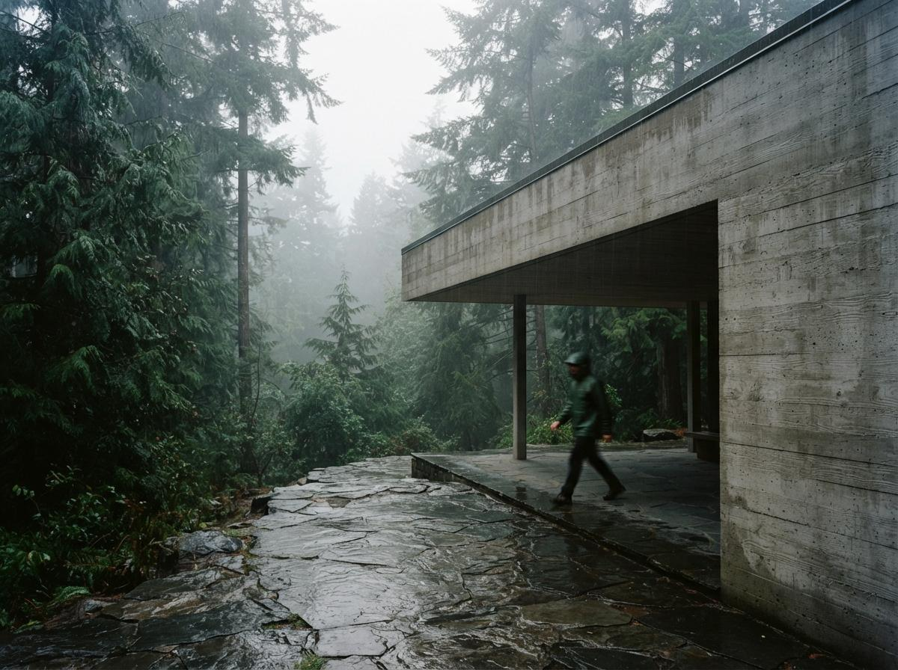

Every week our intel sweep pulls in the vendor posts, the listicles, and the forum threads together, and the forum threads are almost always the most honest of the three. Nobody writing a Reddit comment at midnight is trying to rank for a keyword. This week four questions kept surfacing across separate threads, from separate people, with nobody quoting each other. That kind of convergence usually means the tools have not caught up to what practitioners need yet.
"What are the most useful AI tools in archviz rendering?"
This is the question that opened the biggest r/archviz thread this week, and the honest first line of the reply should always be: nobody talking about renders can find them if they are lost. If you found this because you searched some version of that same question, we wrote a longer answer to exactly that problem in choosing archviz AI by your actual workflow, but the short version is worth repeating here.
Stop asking which tool is best. Ask which stage of the job you are stuck on. A geometry-aware plugin like Veras or Enscape's AI enhancer is the right call when you have a model and need a client-ready image fast. A general image model like Flux or Nano Banana is the right call when you are still exploring concept direction and the model does not exist yet. A ComfyUI pipeline is the right call when neither of those gives you enough control over one specific thing, usually lighting or material fidelity. The confusion in that thread was not a knowledge gap. It was thirty tools answering three different questions, unlabeled.

"Can I build a ComfyUI workflow to enhance my architectural renders?"
Yes, and the thread asking this had the right instinct even if the replies scattered in ten directions. The pattern that actually works, stripped of the noise, is a short chain rather than one giant do-everything graph: a depth or canny ControlNet pass to lock the geometry you already modeled, a light denoise pass through an SDXL or Flux checkpoint to add photographic texture, and a separate targeted pass just for the elements a base render always gets wrong, meaning vegetation, reflections and shadow softness.
The mistake people make here, and it shows up in the replies to that thread too, is trying to fix everything in one prompt at one denoise strength. Split it. Lock geometry first, add material realism second, fix entourage last, and check the output after each stage instead of chaining blind. It takes longer to build once and saves hours of re-running a workflow that half-works.
"Using Flux for image-to-image on a 4K architecture render, how do I keep the lighting realistic?"
This is the sharpest question in the sweep this week because it names the actual failure mode instead of asking for a generic tool recommendation. Image-to-image at high resolution tends to relight a scene subtly even when you only meant to add texture, because the model is repainting pixels, not reasoning about a light source. We went deep on the upscaling half of this problem in getting AI renders to 4K without wrecking the geometry. The lighting half has a narrower fix: keep denoise strength low, in the 0.25 to 0.4 range, on any pass where light direction matters, and reserve higher denoise only for regions you have masked off, like a material swap on a facade panel that is nowhere near a light source.
If a full-frame high-denoise pass is the only way you can get the texture quality you want, do it, but re-render your original shadow study or a simple ambient occlusion pass afterward and composite the shadows back in. It is a manual step, and it is the difference between a render that reads as photographed and one that reads as generated no matter how sharp it looks.
One more thing worth flagging from that thread: several replies suggested cranking resolution first and worrying about lighting after. Do it the other way around. Lock the lighting pass at a lower resolution where iteration is cheap, confirm it reads correctly, and only then upscale. Fixing a relit scene after you have already spent the time on a 4K pass wastes the exact budget the question was trying to protect.
"AI archviz with ComfyUI, SDXL plus Flux, does combining them actually help?"
Yes, and this is less exotic than the thread made it sound. SDXL and Flux are not competing for the same job in a combined pipeline, they are doing different jobs. Flux is generally the stronger model for geometry and material coherence, which is why it is the better base for anything derived from your actual model geometry. SDXL's ecosystem still has the deeper library of ControlNet variants and LoRAs tuned for archviz-specific texture work, things like weathered concrete or specific stone patterns, that the Flux ecosystem is still catching up on. A workflow that generates the base pass in Flux and routes a texture or material refinement pass through an SDXL ControlNet is not overcomplicating things. It is using each model for what it is currently better at, and that gap will keep shrinking as the Flux ecosystem matures, so revisit the split every few months rather than treating it as permanent.
| Question | Short answer |
|---|---|
| Which AI tool is most useful for archviz? | Match the tool to the stage: plugin for a modeled deliverable, general image model for early concept, ComfyUI when you need control neither gives you |
| Can ComfyUI enhance a finished render? | Yes, but as a split chain: geometry lock, then material texture, then entourage, checked at each stage |
| How do I keep lighting realistic at 4K image-to-image? | Keep denoise low (0.25 to 0.4) where light direction matters, mask high-denoise passes to isolated regions, iterate lighting before upscaling |
| Does combining SDXL and Flux help? | Yes, use Flux for geometry and material coherence, SDXL for its deeper archviz-specific ControlNet and LoRA library |
Our take
Read across all four threads and a pattern shows up that no single vendor post will tell you: the people doing the most technically sophisticated archviz work right now are not using the flagship plugin tools at all. They are stitching together open pipelines because the packaged tools do not give them fine enough control over the one variable that actually matters for a given shot, whether that is a light source, a material, or a piece of vegetation. That is not an argument against Veras or Enscape or any other plugin. Most projects do not need that level of control, and the plugin route is faster for a reason. It is a signal about where the ceiling currently sits. If you keep hitting the same wall in a packaged tool, the fix is not a different packaged tool. It is a short custom chain built around the one thing that tool cannot do.
It also says something about where these tools are heading. Every plugin vendor is racing to absorb exactly this kind of granular control into a slider or a preset, which is a large part of what "smoother" release notes are actually describing under the hood. Until that catches up fully, the Reddit threads are doing the vendor documentation's job for free, one specific, unglamorous problem at a time.
We covered the deeper version of that same tension in the ComfyUI archviz question nobody answers, and it is worth reading if any of the four threads above sound like your week. The tools are not the bottleneck for most firms. Knowing which stage you are actually stuck on is.
Written from the 25 July 2026 intel sweep, drawing on threads from r/archviz, r/comfyui, r/FluxAI and r/StableDiffusion surfaced that day. Quotes are paraphrased from thread titles and summaries, not pulled verbatim from individual comments. ArchiGen AI carries no sponsored placements.